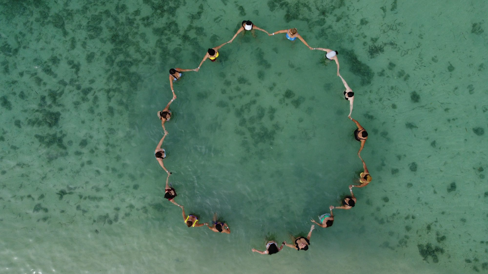

Retiros para mujeres · Caribe colombiano
Cuatro días para volver a ti
Una experiencia vivencial de 4 días y 3 noches en Palomino, entre el mar y la Sierra Nevada, para conectar contigo misma.
Conoce nuestros retirosVolver a Vivir y Volver a Brillar.